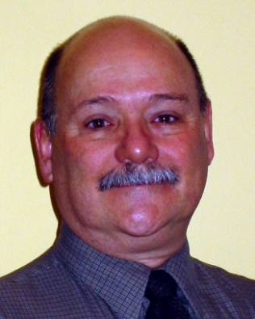

|  | Scott Siddall
Denison University/The Longsight Group |
|
Bio: I serve as the Assistant Provost and Director of Instructional Technology at Denison University (Ohio) where I am responsible for technology in the curriculum including media services. Denison has been a leader in adopting open source solutions. I am involved in several national and regional higher education initiatives involving inter-institutional collaboration, open source software development, emerging technologies to support learning, learning space design, digital asset management, and videoconferencing. As the CEO and Managing Partner of The Longsight Group, I am very active in supporting and piloting open source applications for higher education. Our firm has been providing support for CourseWork, CHEF, uPortal and Sakai since 2002. Education: I earned my BA degree at Case Western Reserve University and my doctorate in oceanography at the University of Miami before serving on the graduate faculties at the University of Miami and the State University at Stony Brook. The development and use of cutting-edge technologies have always been part of my portfolio. I've been in higher ed IT management for twenty-five years at both large universities and small colleges. I've held leadership roles in several professional associations and am active in EDUCAUSE as leader of CIO Constituency Group, Research Task Force member (helping to plan the Core Data Service), conference program committees, Advisory Committee for Teaching and Learning, Consumer Guide Advisory Group and more. Platform:
I will bring a unique perspective to the Sakai Foundation Board because my work spans higher ed management, teaching and research as well as corporate support for Sakai. I have led my academic institution's effort to pilot Sakai and its precursors for several years, and I lead a commercial firm that provides Sakai hosting and support for many colleges and universities, including full production uses of Sakai. I have used Sakai in teaching; I have developed training materials; I have responded to tier 1 and 2 support calls; I have planned pilot and production instances of Sakai. I have been involved in the effort since 2001 with the OKI, but my perspective is fresh because I have not been involved in Sakai governance. I seek election to the Board so I can help this vital community achieve the vision we have for Sakai. The Sakai Project builds on our institutions' core competencies in teaching and research and gives us an incredible opportunity to transform our diverse higher ed community by sustaining engagement, innovation and collaboration. The Sakai Foundation Board members must ensure the best possible outcome from this pioneering collaboration by: - nurturing the motivation of the individual contributor - providing project and inter-institutional leadership - listening to the diverse community of large and small schools of all Carnegie classifications, commercial affiliates and unaffiliated vendors, foundations, and other producers and consumers of Sakai - communicating clearly with a growing audience to frame expectations accurately - sustaining the long term economic viability of the suite of Sakai concepts I believe my experience, commitment to the project and professional connections will enable me to serve the Sakai Foundation Board well. Thank you for your consideration. | |